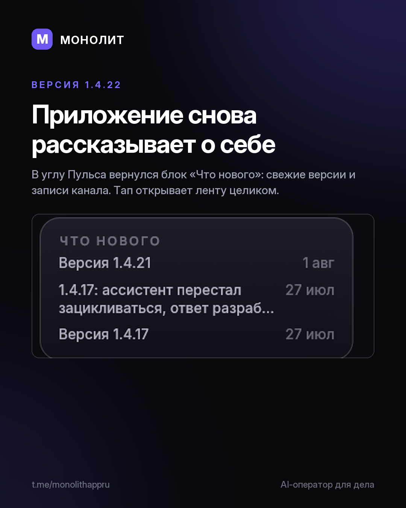

Дневник разработки · 03.08.2026
Приложение снова рассказывает о себе

В углу Пульса вернулся блок «Что нового»: свежие версии и записи канала, тап открывает ленту целиком. В прошлой переборке я убрал оттуда строку «Версия 1.4.21 · сверено с сервером» — она отвечала на вопрос, которого никто не задавал. Вернулось то, у чего есть содержание.
Телефон догнал компьютер в главном денежном действии. «Ждём на счёт»: кто и когда обещал заплатить, поимённо, с кнопкой «Деньги пришли» прямо в строке. Раньше приход можно было отметить только с ПК.
Ревизия нашла ещё две вещи. Список категорий расходов показывал топ-5, а сумма над ним считалась по всем: доли давали 96%, остаток пропадал молча. То же у списка должников. Теперь хвост свёрнут строкой «Остальное», и проценты снова дают сто.
1.4.22 в проде, Windows и Android. Установленное обновится само.
МОНОЛИТ — учёт заказов, клиентов и денег одной фразой. Windows и Android, бесплатная бета.
Скачать Читать канал